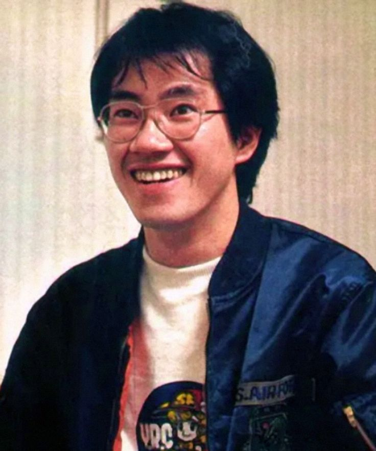

Dragon Ball
A legendary martial arts adventure following Goku and his friends through battles, exploration, and the search for the Dragon Balls.

Manga Artist • Character Designer
One of Japan's most influential manga creators, internationally recognized for Dragon Ball and his distinctive character designs.
← Back to CreatorsAkira Toriyama was a Japanese manga artist and character designer whose work had a major influence on manga, anime, games, and popular culture around the world.
His creations are known for energetic action, comedy, imaginative characters, and distinctive visual designs that became instantly recognizable across generations.
A legendary martial arts adventure following Goku and his friends through battles, exploration, and the search for the Dragon Balls.
A comedic science-fiction manga centered on the eccentric inventor Senbei Norimaki and his android creation Arale.